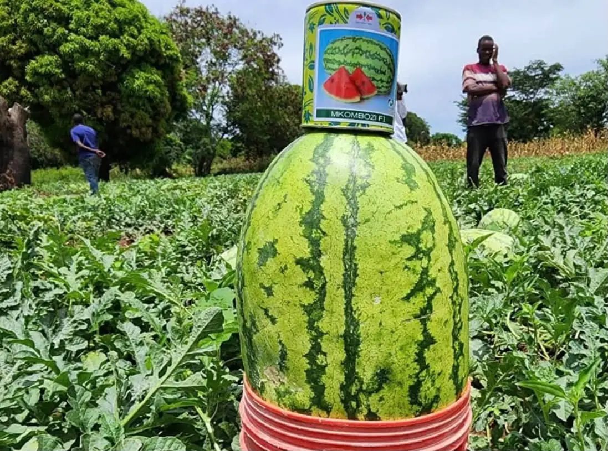
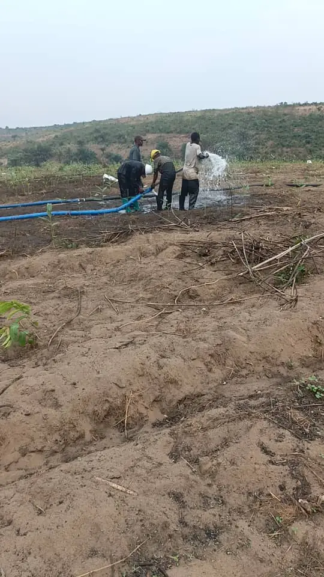
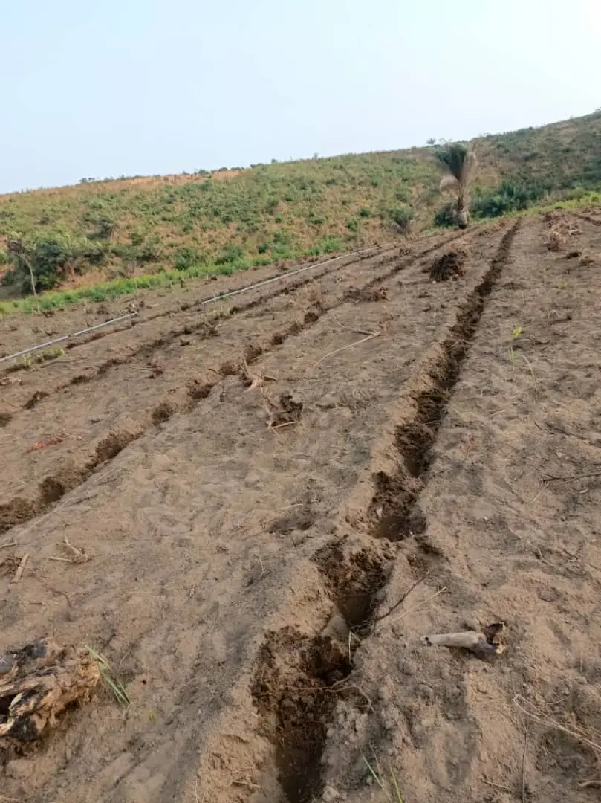
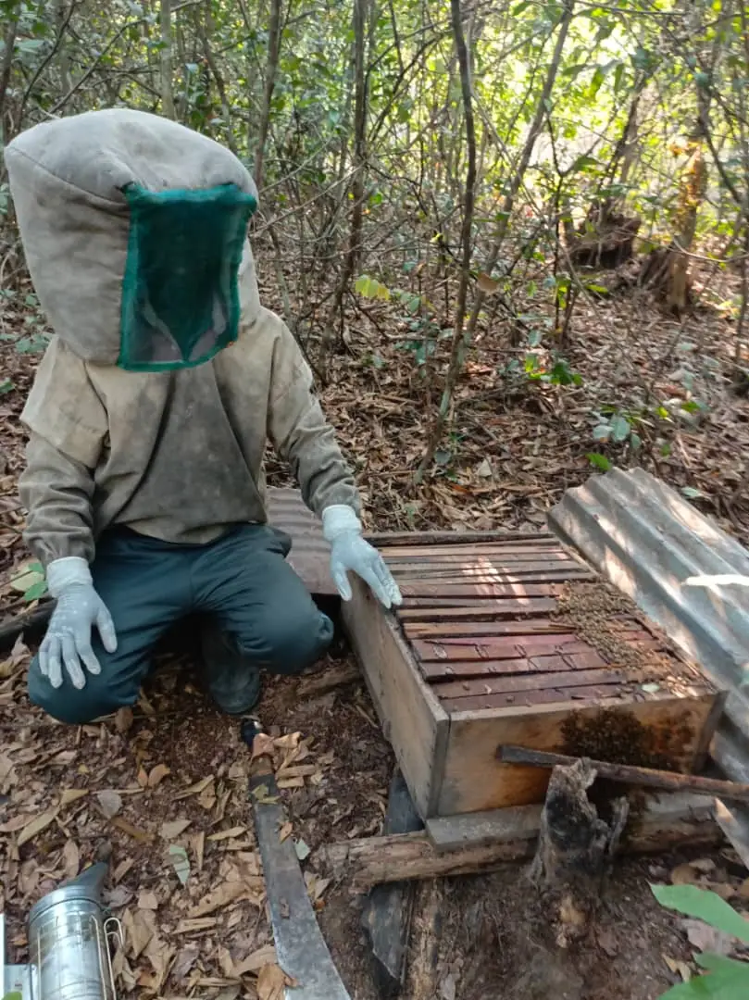
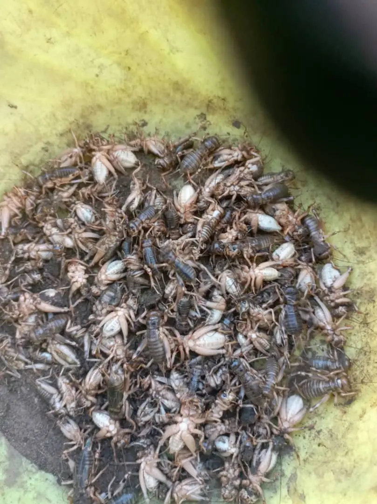
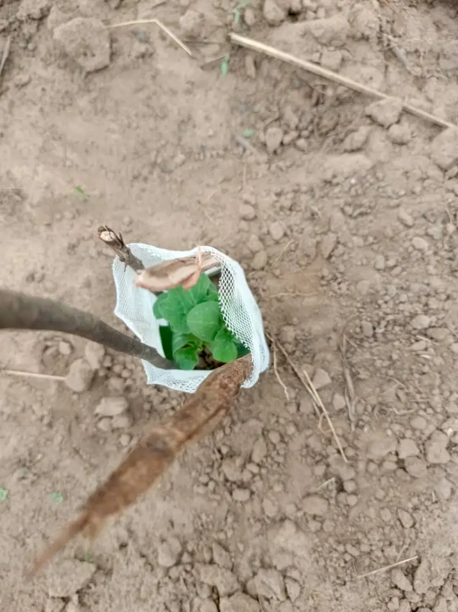
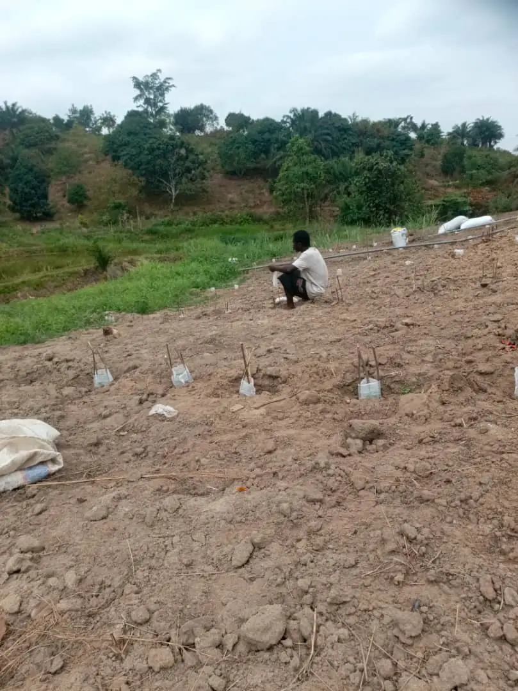
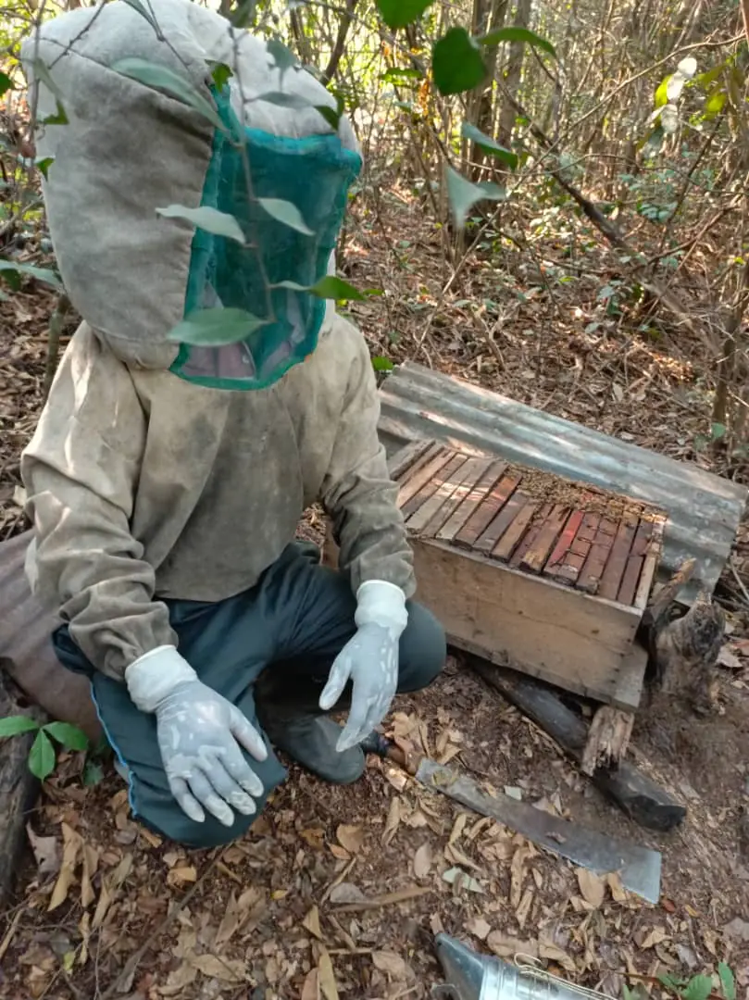

Maraîchage
Culture de pastèques
Production de pastèques à partir de semences sélectionnées, avec un suivi technique de la plantation à la récolte et un appui à la commercialisation.
Découvrez les filières agropastorales développées par ADRIC avec les paysans de la République Démocratique du Congo.

Production de pastèques à partir de semences sélectionnées, avec un suivi technique de la plantation à la récolte et un appui à la commercialisation.

Installation de motopompes et de tuyaux pour arroser les cultures et produire toute l'année, y compris en saison sèche.

Défrichage, labour et traçage de sillons pour mettre en valeur de nouvelles terres agricoles.

Installation de ruches modernes en lisière de forêt, formation et équipement des apiculteurs pour une récolte de miel régulière.

Production de grillons, insectes comestibles très riches en protéines, appréciés localement et peu exigeants en ressources.

Mise en terre de plantules d'essences forestières et fruitières pour lutter contre l'érosion et restaurer la fertilité des sols.


Matériel aratoire, intrants, semences, plantules et géniteurs mis à disposition des membres.
Encadreurs techniques agropastoraux sur le terrain et démonstrations au centre agropastoral.
Petits prêts agricoles pour permettre aux exploitations de grandir et de devenir autonomes.
Bailleurs, entreprises, collectivités : construisons ensemble des projets à fort impact pour le monde rural congolais.